ThaiKoket
vår menyVälkommen till Restaurang ThaiKöket
Om Oss
Vår berättelse
När Wilai kom till Kalix år 2001 hade hon ingen tanke på att en dag driva en av ortens mest uppskattade restauranger. Hon hade inte heller någon större erfarenhet av matlagning. Men efter några månader av svensk husmanskost växte en allt starkare hemlängtan – inte efter platsen, utan efter smakerna. Doften av galangal, värmen från chili, den friska syran från limeblad.
En kväll ringde hon sin mamma i Thailand och bad om recept. Det samtalet blev början på något som skulle förändra hennes liv. Från den dagen lagade hon mat varje dag, och sakta växte en passion fram – en passion som snart skulle delas med hela Kalix.
2009 tog hon mod till sig och öppnade Repaköket, ett litet hus på hjul där hon serverade thailändska rätter till förbipasserande. Maten blev snabbt omtyckt, och 2011 tog hon nästa steg: Thaiköket på Köpmangatan 28 slog upp dörrarna. Det var en liten restaurang med 18 sittplatser och fokus på hämtmat, men värmen och smakerna gjorde att gästerna kom tillbaka, om och om igen.
När två världor möttes
2016 förändrades allt. Det var året då Wilai träffade Roger – en man med en helt annan bakgrund, men med samma drivkraft att skapa något äkta. Roger började sin bana som kock redan 1984, bara 20 år gammal, som kökslärling på SAS i Luleå. Han arbetade mest på Cook's Krog och blev den första kocken som fick inviga den grill som fortfarande används än idag. Men musiken kallade, och 1986 började han på musiklinjen vid Kalix Folkhögskola. Två år senare fortsatte han till lärarutbildningen i Piteå, men redan efter en termin erbjöds han jobb som musiklärare i Kalix. Det tackade han ja till – och stannade i hela 27 år.
När Roger och Wilai möttes fann de snabbt något gemensamt: en vilja att skapa, utveckla och ge människor upplevelser. Tillsammans bestämde de sig för att satsa på restaurangen. De byggde ut, ordnade fler sittplatser och introducerade buffé på hösten. Succén lät inte vänta på sig – på bara sex månader tredubblades antalet lunchgäster. Men med fler gäster kom också ett behov av mer utrymme. Efter två och ett halvt års funderande, planering och drömmar tog de beslutet: Thaiköket skulle flytta.
Ett nytt kapitel
I maj 2019 öppnade nya Thaiköket på Köpmangatan 21 – större, ljusare och med plats för ännu fler att njuta av Wilais mat och Rogers vision. Det blev inte bara en flytt, utan en nystart. En plats där deras två livsresor möttes och blev till något större. Med den nya lokalen växte också ambitionerna. Menyn utvecklades, köket förfinades och dryckesutbudet breddades. Idag erbjuder Thaiköket inte bara genuina thailändska rätter, utan även ett omfattande sortiment av drycker – från läsk och cider till ett stort urval av öl, whisky, cognac och rom. Allt noggrant utvalt för att komplettera smakerna i maten och ge gästerna en helhetsupplevelse.
kolla vår take away meny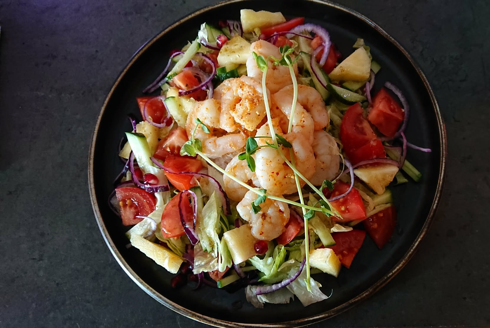
pris från 130 :-
Med Reservation För Prisändringar
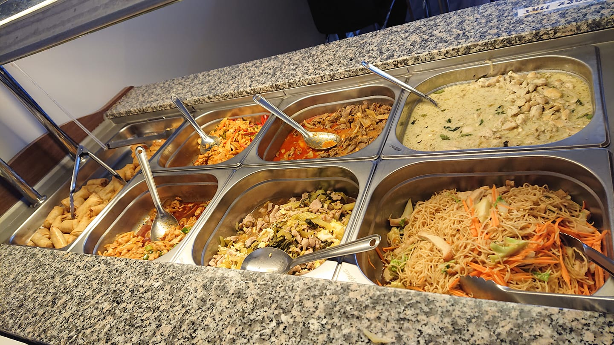
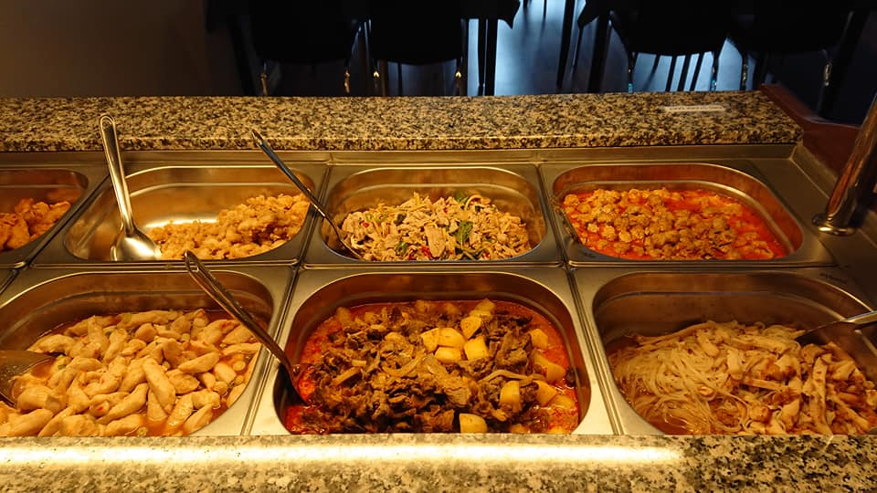


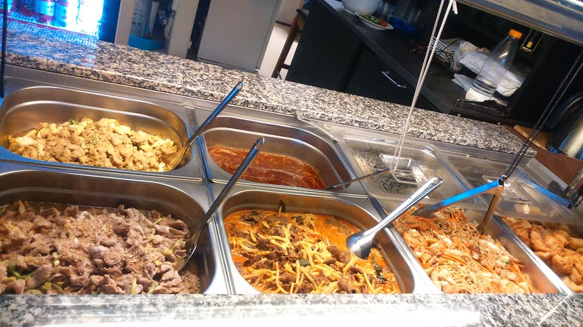
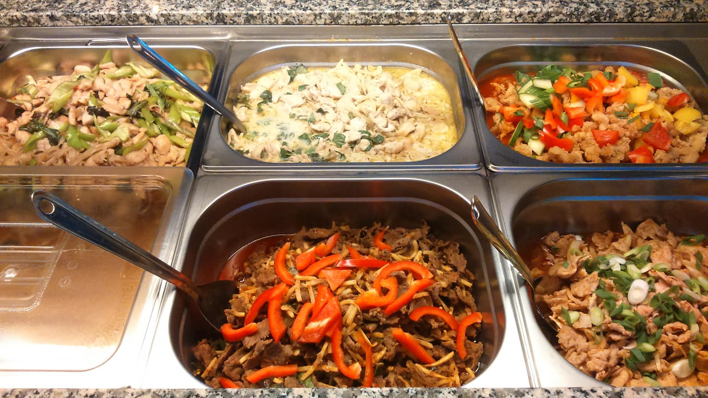

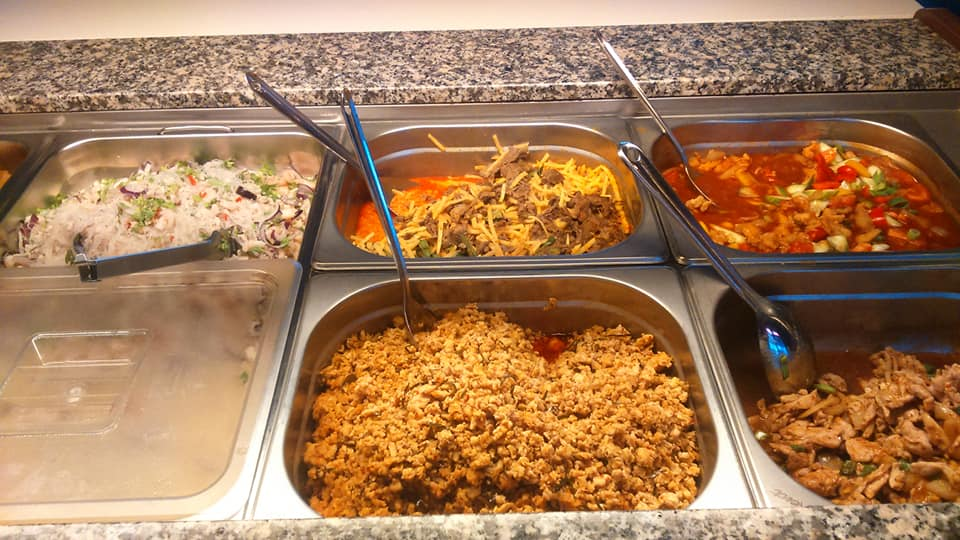

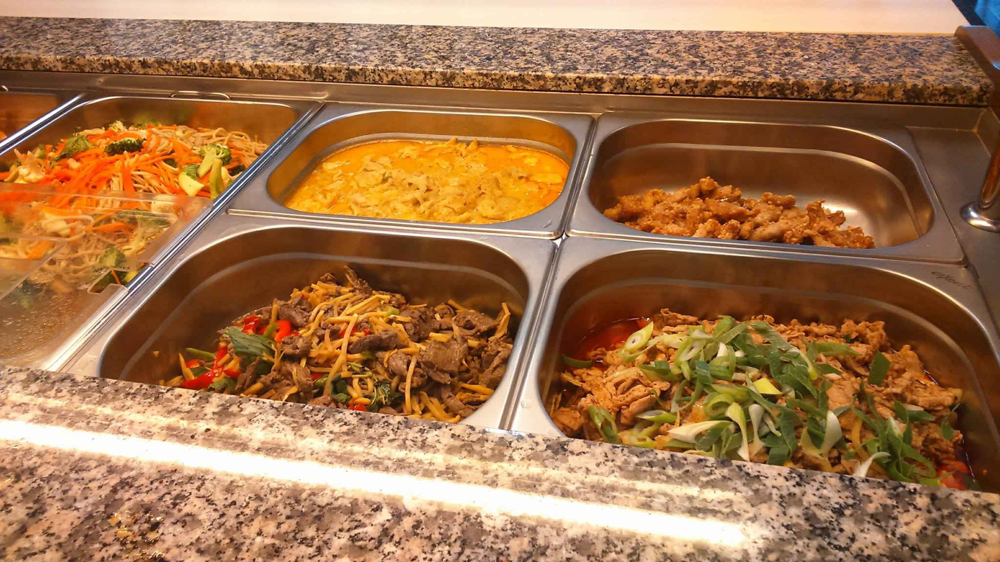


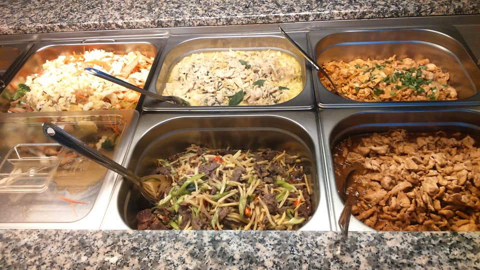
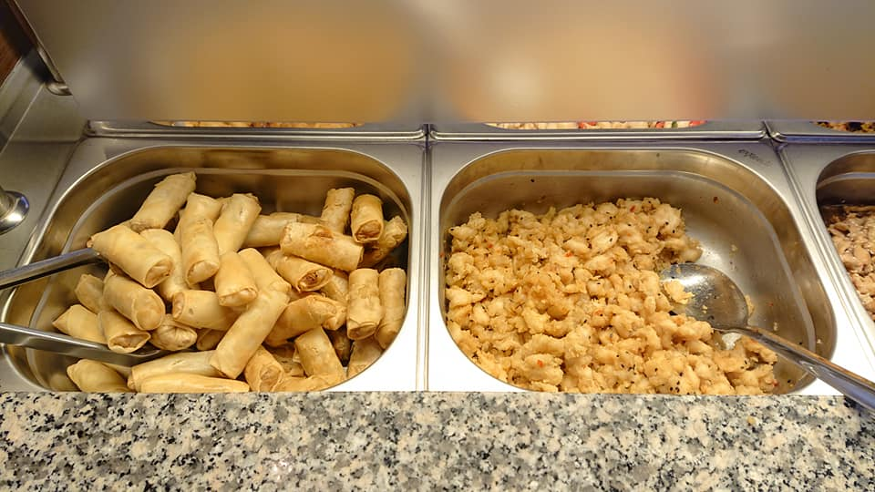


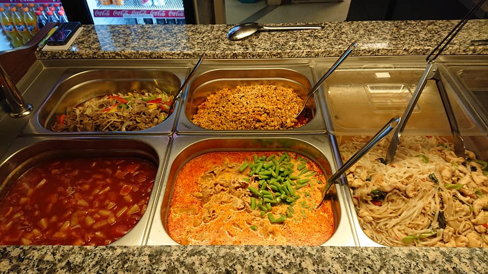

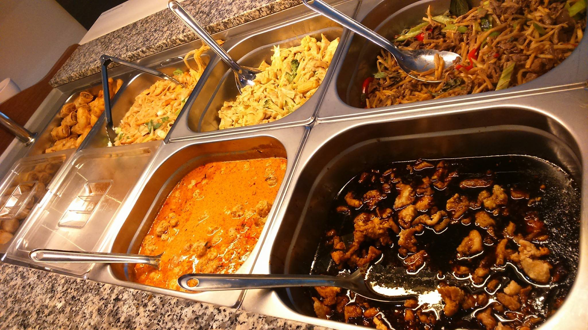

take away meny
om du är allergisk mot något fråga oss gärna

64. phad pak loam
glasnudlar med grönsaker
A)- Tofu
B)-
Quornfilé
65. phad thai
Risnudlar, tamarindsås, grönsaker och lättfriterad tofu,
tillbehör jordnötter och lime
A)- med ägg
B)- utan
ägg
{kind=link}
{kind=link}
{kind=link}
{kind=link}
{kind=link}
{kind=link}
{kind=link}
{kind=link}
{kind=link}
{kind=link}
{kind=link}
{kind=link}
{kind=link}
{kind=link}
{kind=link}
{kind=link}
{kind=link}
{kind=link}